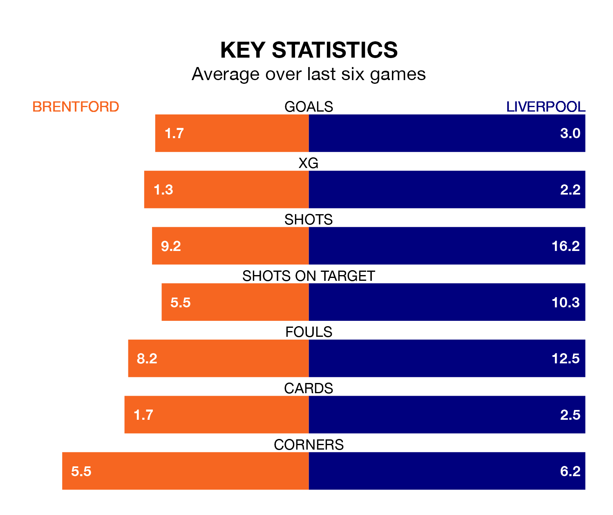

Liverpool are strong favourites to take all three points despite Brentford's home advantage in Saturday lunchtime's match at the Gtech Community Stadium.
*Betting Company* are offering odds of 1.56 on Liverpool sealing the win, with the visitors sitting first in the Premier League table.
Brentford, who are 15th in the league and 29 points behind the Reds, are priced at 5.4 to win. A draw is set at 3.93.
With 55 goals in 24 games so far this season, Liverpool are the league's second-highest scorers with 2.3 goals per game. And they are conceding fewer than average, letting in 23 goals at a rate of 1.0 per game.
Brentford, meanwhile, are below average scorers, with 1.5 goals per game, compared to a league average of 1.6. They have conceded 1.7 goals per game.
In Mohamed Salah, the Reds have one of the league's sharpest shooters so far this season. He has notched 14 goals in 20 appearances, to sit second in the scoring charts.
His goal rate of one every 125 minutes is quicker than that of Bryan Mbeumo, the Bees's top scorer with a goal every 184 minutes, and a total of seven goals in 15 games.
The hosts are in disappointing form in the Premier League, with two wins and four losses from their last six games.
With five wins and one loss over that period, the away team's form is much better – they have taken 15 points from 18, compared to Brentford's six.
In the last five years, Brentford and Liverpool have played each other on five occasions. Brentford won one of them, Liverpool three, and they drew once.
On average, the Bees scored 1.2 goals and the Reds 2.2 in those matches.
Their last meeting was on November 12, when Liverpool won 3-0 at home.
Brentford's last match was on Saturday, a 2-0 win against Wolverhampton Wanderers, with Christian Nørgaard and Ivan Toney getting the goals for the Bees.
Liverpool beat Burnley 3-1 last time out, also on Saturday, with Darwin Núñez, Diogo Jota and Luis Díaz on the scoresheet.
Updated: 09:02 (UTC), 13/02/24